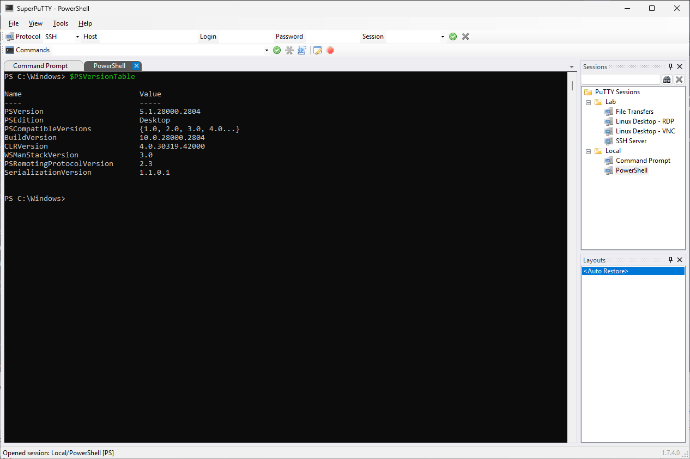
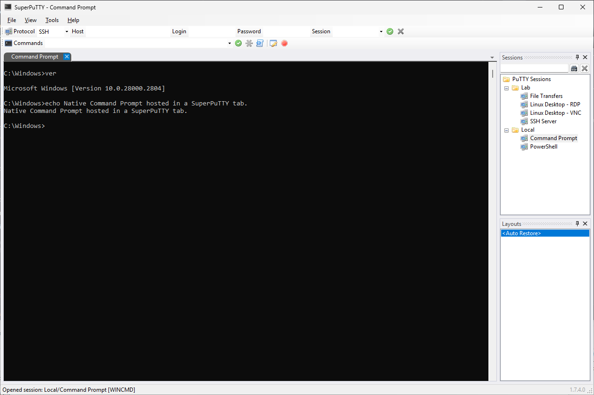

Arrange your workspace
Tabbed connections, dockable panels, saved sessions, and reusable layouts keep related work together.
WINDOWS X64 · OPEN SOURCE · MIT LICENSE
SuperPuTTY Community Edition brings PuTTY, PowerShell, Command Prompt, RDP, VNC, and SCP sessions into a flexible tabbed workspace.
An independently maintained community fork of Jim Radford’s SuperPuTTY. Community releases are not official upstream releases and imply no endorsement by Jim Radford or the PuTTY developers.
Preparing 1.8.0. This is a launch preview. Version 1.8.0 is not published; the download button opens the existing stable release. Read the draft release notes.

BUILT FOR DAILY ADMINISTRATION
Tabbed connections, dockable panels, saved sessions, and reusable layouts keep related work together.
Manage SSH through PuTTY, local consoles, RDP and VNC viewers, and integrated SCP transfers through PSCP. Connection tools are installed separately.
Signed Windows releases, updated dependencies and documentation, safer preference saves, and a community update channel.

Requirements: Tested on Windows 11 x64. Expected to install and run on Windows 10 x64 with .NET Framework 4.8 or later, but Windows 10 has not been tested for this release. Install the external clients needed for your sessions. Windows 10’s vendor support depends on your edition and servicing arrangement. No x86 or native ARM64 package is provided. Remote protocols and authentication depend on your installed clients.
Installs into your Local AppData directory. Does not require administrator approval.
*-current-user-win-x64-signed.msiInstalls into 64-bit Program Files. Requires administrator approval.
*-all-users-win-x64-signed.msiExtract and run SuperPutty.exe. Existing profile preferences take precedence; this is not an isolated portable profile.
*-portable-win-x64.zipBack up settings before upgrading. Existing filenames and settings paths are preserved. Upstream coexistence is unsupported. Installation guide · Upgrade and compatibility guide
Check the MSI signature before installation, or the extracted executable before launching. Signed releases must show Valid, signer Christopher Thornton, and a timestamp certificate.
Get-AuthenticodeSignature .\SuperPuTTY-CE-1.8.0-current-user-win-x64-signed.msi | Format-List
Get-AuthenticodeSignature .\SuperPutty.exe | Format-List
Get-FileHash .\SuperPuTTY-CE-1.8.0-current-user-win-x64-signed.msi -Algorithm SHA256Compare the complete SHA-256 value with the matching line in SuperPuTTY-CE-1.8.0-SHA256SUMS.txt from the same release. These filenames describe the pending 1.8.0 release. Checksums detect changed bytes; verify Authenticode as well. A valid signature is not a guarantee that software has no vulnerabilities.
Maintained by Chris Thornton. Based on the original SuperPuTTY by Jim Radford and its contributors. Licensed under the MIT License; original attribution and third-party notices are retained.
Issues and private vulnerability reporting are enabled. Please report vulnerabilities privately through the security-reporting link.